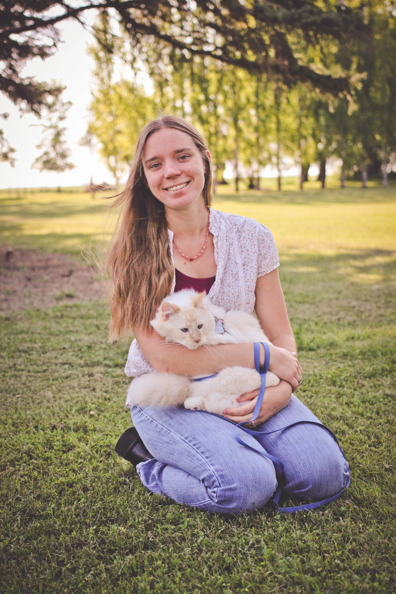
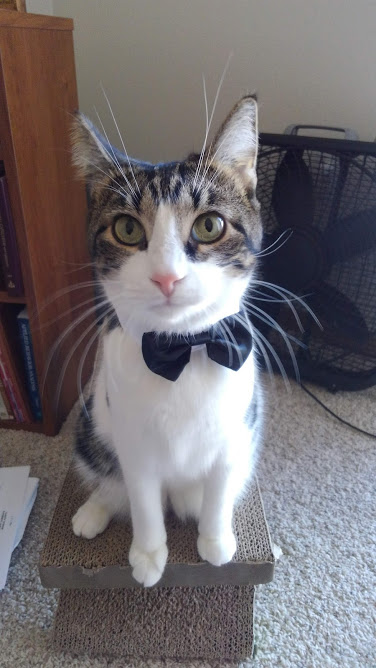
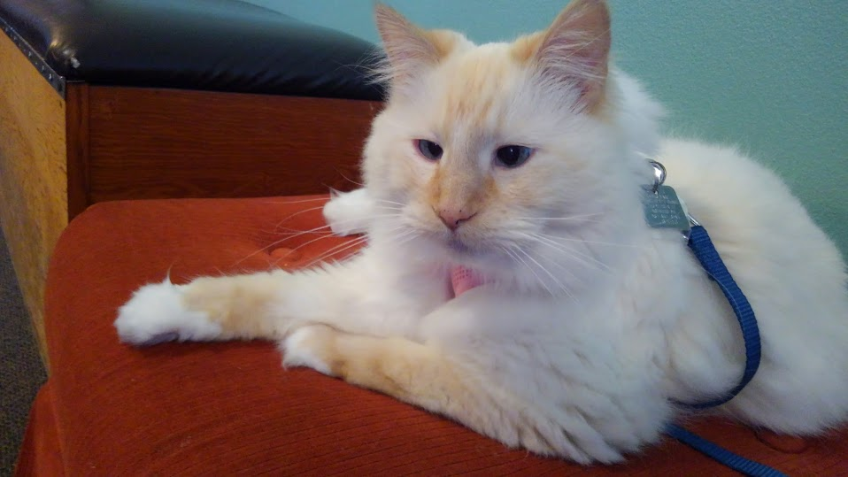

Beth
My Values
I strive to meet people where they are. I desire to empower learners both human and animal to learn and grow in their ability to communicate with each other. I am committed to using scientifically sound training techniques. I believe in using least aversive minimally invasive methods for modifying behavior.
Continuing Education
I love learning and enjoy every opportunity to grow in my field. I often read books and research papers to stay up to date. I have enjoyed attending the Clinical Animal Behavior Conference in Las Vegas 4 years. I have also had the opportunity to learn from board certified veterinary behaviorists who are experts in the field.
Meet the Pets

Winston
This is Winston Churchill. I enjoy teaching him new things, especially to be happy wearing hats and capes. He purrs loudly as he pushes his head into his hat, and it makes me smile. Often it is entertaining to teach tricks that are just for fun as long as you and your learner are enjoying the training. He also enjoys exploring our yard on a leash and brushing his teeth before bed.

April
April was my senior cat. She passed away at somewhere around 18 years old. Since she was adopted around two years old, we are not sure exactly how old she was. She enjoyed learning new things all they way through her golden years. Learning to be comfortable with new sounds and veterinary care took lots of patience and practice.

Martok
Martok is the newest addition to the household. Most of his learning has been how to exist in human society and my house. For example, feet are not for chewing, and he needs to wait before eating anything dropped on the floor. He is getting started on some scent work training, and it is so much fun to watch him learn.